<header
  class="pt-7 text-4xl md:text-6xl flex justify-center items-center w-full font-bold"
>
  <aside
    (click)="toggleOpenSideMenu(el)"
    class="absolute z-20 left-9 flex gap-1 flex-col cursor-pointer"
  >
    <div class="w-6 h-1 bg-brand flex gap-10 flex-col"></div>
    <div class="w-6 h-1 bg-brand flex gap-10 flex-col"></div>
    <div class="w-6 h-1 bg-brand flex gap-10 flex-col"></div>
  </aside>
  <div>
    <nav
      #el
      class="z-20 fixed top-0 -left-[100vw] font-light bg-darkest h-screen text-bgColor sm:text-lg text-sm flex flex-col gap-5 sm:w-[300px] w-[60vw] sm:pl-16 pl-10 pt-32 tracking-wider"
    >
      <button
        (click)="toggleOpenSideMenu(el)"
        class="absolute right-8 top-[38px] flex gap-1 flex-col"
      >
        <mat-icon class="scale-[1] text-bgColor">close</mat-icon>
      </button>

      <a
        class="flex sm:items-start items-end gap-3 sm:hover:opacity-70 transition duration-300"
        routerLink="/"
        routerLinkActive="activated"
        [routerLinkActiveOptions]="{ exact: true }"
        ><mat-icon class="material-symbols-outlined scale-[0.85] sm:scale-[1.1]"
          >home</mat-icon
        >
        <span>Início</span></a
      >
      <a
        class="flex sm:items-start items-end gap-3 sm:hover:opacity-70 transition duration-300"
        routerLink="/cachorros"
        routerLinkActive="activated"
        [routerLinkActiveOptions]="{ exact: true }"
        ><mat-icon class="material-symbols-outlined scale-[0.85] sm:scale-[1.1]"
          >sound_detection_dog_barking</mat-icon
        >
        <span>Cachorros</span></a
      ><a
        class="flex sm:items-start items-end gap-3 sm:hover:opacity-70 transition duration-300"
        routerLink="/gatos"
        routerLinkActive="activated"
        [routerLinkActiveOptions]="{ exact: true }"
        >
        <span class="ml-[1px]">Gatos</span></a
      ><a
        class="flex sm:items-start items-end gap-3 sm:hover:opacity-70 transition duration-300"
        routerLink="/doacao"
        routerLinkActive="activated"
        [routerLinkActiveOptions]="{ exact: true }"
        ><mat-icon class="material-symbols-outlined scale-[0.7] sm:scale-[0.90]"
          >currency_exchange</mat-icon
        >
        <span>Nos Ajude</span></a
      >
    </nav>
  </div>

  <a class="text-primaryColor flex gap-5 items-center text-center text-darkest">
    <mat-icon class="scale-[2.3] -mt-2 text-brand"> pets </mat-icon>
    <h1 class="text-darkest">Adote <span class="text-brand">já</span></h1>
  </a>
  <div
    *ngIf="openSideNav"
    (click)="toggleOpenSideMenu(el)"
    class="w-screen h-screen fixed top-0 left-0 bg-black opacity-25 z-10"
  ></div>
</header>
